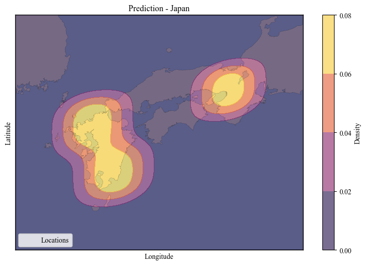

A geospatial tool for looking up countries from coordinates and visualizing geospatial data.
Install geo_tools via pip:
pip install git+https://github.com/Louis-Li-dev/Geo-Tools.gitThis package requires Python 3.6+ and the dependencies listed in the setup.py file (pandas, numpy, matplotlib, etc.).
The geo_api package provides tools for coordinate lookups and transformations.
CountryLocator downloads and caches GeoJSON data, prepares country geometries, and allows you to look up the country for a given coordinate. In addition to basic lookup functionality, it supports persistent caching of coordinate lookup results.
Example:
from geo_tools.geo_api.coordinate_lookup import CountryLocator
# Initialize with a persistent lookup cache and automatic saving enabled
locator = CountryLocator(
lookup_cache_path="lookup_cache.pkl",
auto_install=True,
auto_save_lookup_cache=True,
verbose=True
)
# Single coordinate lookup:
country = locator.get_country(-122.4194, 37.7749)
print("Country:", country)
# Lookup for multiple coordinates:
coords = [(-122.4194, 37.7749), (2.3522, 48.8566)]
countries = locator.lookup(coords)
print("Countries:", countries)
# Optionally, manually flush the lookup cache if auto-saving is disabled:
locator.flush_cache()
CoordinateGrid discretizes float coordinates into grid cells. It supports scaling methods
(none, minmax, or standard), inverse transformations, and grid plotting.
"none", "minmax", or "standard").Example:
from geo_tools.geo_api.coordinate_transform import CoordinateGrid
import pandas as pd
df = pd.DataFrame({
'longitude': [115, 120, 125],
'latitude': [80, 85, 90]
})
grid = CoordinateGrid(cell_size=10, scaling_method="none", verbose=True)
fitted_df = grid.fit(df=df, lon_col='longitude', lat_col='latitude')
print(fitted_df.head())
# Transform a single coordinate
cell = grid.transform(117.5, 82.5)
print("Grid cell:", cell)
# Inverse transform
original = grid.inverse_transform(cell[0], cell[1], method="center")
print("Original coordinates:", original)
CoordDiscretizer converts check-in data into sequences or matrices by discretizing coordinates. It groups data by user and day, returning either a sequence of visited grid cells or a matrix representation.
"order" for sequential marking or "binary" for flagging."sequence" returns lists; "matrix" returns 2D arrays.Example:
from geo_tools.geo_api.coordinate_transform import CoordDiscretizer
import pandas as pd
checkins = pd.DataFrame({
'Uid': [0, 0, 1, 1],
'Timestamp': ["2021-01-01 10:00:00", "2021-01-01 12:00:00",
"2021-01-02 09:00:00", "2021-01-02 09:05:00"],
'Date': ["2021-01-01", "2021-01-01", "2021-01-02", "2021-01-02"],
'Longitude': [115, 115, 120, 120],
'Latitude': [80, 81, 85, 86]
})
discretizer = CoordDiscretizer(start_val=1, mode="order", output="sequence", verbose=True)
uid_sequences = discretizer.fit_transform(checkins, uid_col="Uid", time_col="Timestamp", date_col="Date",
lat_col="Latitude", lon_col="Longitude")
print("UID Sequences:", uid_sequences)
# Inverse transform:
recovered = discretizer.inverse_transform(uid_sequences)
print("Recovered Sequences:", recovered)
The geo_plot package offers visualization tools for geospatial data.
CoordinatePlotter uses Matplotlib and Basemap to plot latitude/longitude data.
It supports filtering by user, year, and sorting by time. In this updated version, you can also overlay a Gaussian KDE density background,
adjust the transparency of each point based on its local density, and fine-tune the KDE bandwidth using the bw_method parameter.
'Latitude' and 'Longitude'.KDE Diagrams

Example:
from geo_tools.geo_plot.map_plot import CoordinatePlotter
import pandas as pd
df_map = pd.DataFrame({
'Uid': [1, 1, 2, 2],
'Year': [2021, 2021, 2021, 2021],
'Latitude': [37.7749, 37.7849, 40.7128, 40.7306],
'Longitude': [-122.4194, -122.4094, -74.0060, -73.9352]
})
plotter = CoordinatePlotter(
df=df_map,
uid=1,
year=2021,
num_of_samples=None,
time_columns=['Year'],
margin=1.5,
figsize=(8,6)
)
# Plot with density background overlay, density-based point alpha, and a custom KDE bandwidth.
plotter.plot(
title="User 1 Check-ins with Density",
point_color='blue',
overlay_density_background=True,
density_levels=20,
density_cmap='viridis',
density_based_alpha=True,
min_alpha=0.3,
max_alpha=1.0,
bw_method=0.1 # Adjust the KDE bandwidth for a more localized density estimation
)
plot_and_compare is a utility class for visualizing and comparing results in 1D, 2D, or 3D. It helps you compare ground truth data against predictions.
Example:
from geo_tools.geo_plot.square_plot import plot_and_compare
import numpy as np
data_gt = np.random.rand(10)
data_pred = data_gt + np.random.normal(0, 0.1, 10)
comparer = plot_and_compare([data_gt, data_pred], names=["Ground Truth", "Prediction"])
comparer.plot(figsize=(12,4), cmap='viridis')